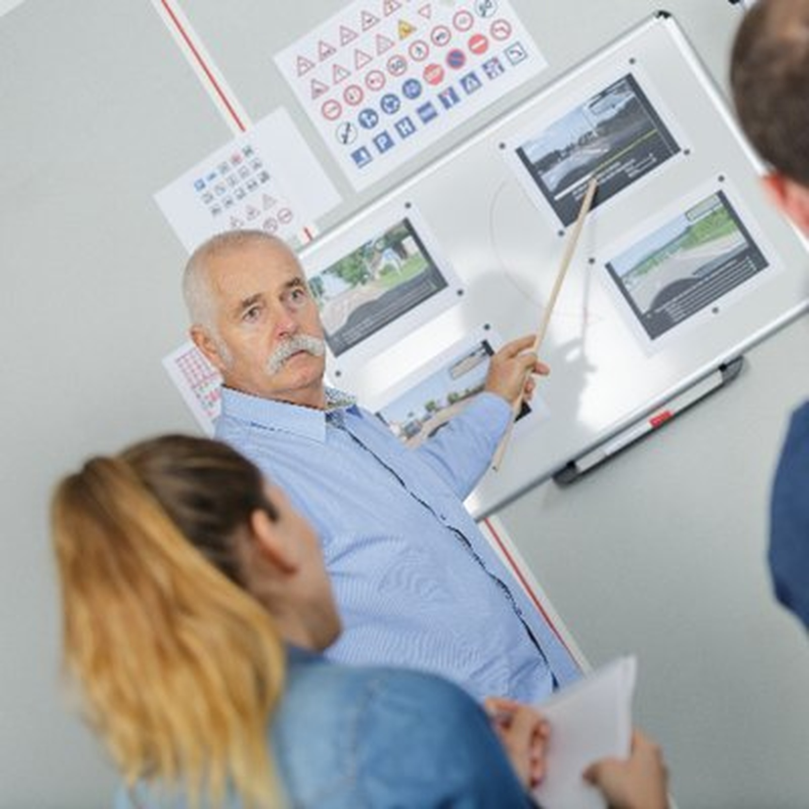

Beginner Driving Lessons Liverpool
Beginner driving lessons in Liverpool for learners who need a calm first step
Learn in a dual-controlled automatic car with Ashraf George and build confidence from the basics, with local road practice, patient one-on-one instruction and steady progress toward independent driving.

Best for
First-time learners, nervous beginners, parents booking for teens, and adults starting later.
Quick answers
What beginner learners and parents usually want to know first
This section gives direct answers before the page moves into lesson structure, local road practice, trust signals and beginner progress.
Are these lessons suitable for complete beginners?
Yes. The service is designed for first-time learners who need a patient introduction to the car, road rules, steering, mirrors, positioning and early decision-making.
What happens in the first lesson?
The first lesson usually starts in a quieter area and covers vehicle controls, moving off, stopping, mirrors, steering and road positioning before more complex traffic is introduced.
Can you help build 120 learner hours?
Yes. Lessons support logbook progress with structured local driving practice across quieter streets, main roads, busy intersections and broader Liverpool driving conditions.
Do you help with Liverpool test preparation later on?
Yes. Once the learner is ready, lessons can move toward test route familiarisation, mock tests and local examiner-style checks in the Liverpool area.
Beginner lesson structure
Beginner driving lessons in Liverpool that move from car basics to independent driving
Good beginner lessons do more than put a learner in the driver’s seat and hope confidence appears. They start with the right environment, the right pace and the right explanations. That means low-pressure first sessions, clear feedback, and a lesson plan that builds from vehicle basics into real driving conditions across Liverpool and the surrounding suburbs.
For some learners, the hardest part is simply getting comfortable moving the car, checking mirrors and steering smoothly. For others, the stress comes later when they face intersections, lane changes, roundabouts or faster roads. A structured beginner lesson plan lets the learner build one skill at a time until those situations feel manageable instead of overwhelming.
- One-on-one automatic lessons with a patient instructor who works well with complete beginners
- First-lesson guidance on controls, mirrors, steering, braking, positioning and basic traffic rules
- Progressive lesson plan from quiet roads into busier Liverpool driving conditions
- Support for logbook hours, independent driving confidence and later test preparation

How lessons work
From first booking to test readiness, the steps stay clear
Beginner learners usually do better when each phase feels manageable. The process below follows the briefed teaching flow from early vehicle introduction through to independent decision-making and test preparation.
Initial booking
The learner confirms they hold a current NSW learner licence and is matched with a beginner-friendly lesson approach.
First lesson
Vehicle controls, mirrors, steering, braking and road positioning are introduced in a quieter area so the learner is not overloaded.
Progressive skill building
Lessons advance through residential streets, main roads, merging traffic, intersections and roundabouts as confidence improves.
Independent driving
The learner starts making more of their own decisions while the instructor coaches observation, spacing, timing and road judgement.
Who these lessons suit
Best fit for learners who want patient support and steady early progress
The service is built for beginners who need a proper foundation, not rushed laps around the block with no structure.
Good fit
- Teen learners starting their first real lesson series
- Parents booking for sons or daughters on their Ls
- Adults who did not learn to drive earlier and want a calm start
- Nervous students who need simple, clear instruction
Common beginner concerns
- Feeling overwhelmed by traffic and busy intersections
- Not knowing where to start with the car itself
- Worry about making mistakes in front of an instructor
- Uncertainty about how to reach real test standard over time
Not the right fit
- Students only looking for a last-minute test car with no ongoing practice
- Learners expecting overnight results with no repetition
- Anyone wanting hype, pressure or fake pass-rate claims instead of proper instruction
Who we serve
Beginner support for school students, TAFE students, workers and parents managing lesson schedules
First-time learners do not all come from the same place. Some are school students starting logbook hours. Some are young adults around TAFE or university. Others are older learners finally making time to get confident on the road. Liverpool also brings together families from different backgrounds, so the lesson style has to be direct, calm and practical enough to meet each learner where they are.
- Teen learners on their Ls who need the basics taught properly
- Parents who want a patient, safety-first instructor
- Students and workers needing flexible lesson timing
- Late starters who want to build confidence without feeling rushed

Lesson coverage
What beginner driving lessons in Liverpool usually cover
The structure changes with the learner, but beginner lessons still need to cover the full topic properly, from car control to local road confidence and logbook efficiency.
First lessons in low-pressure areas
Early practice stays manageable so the learner can focus on steering, mirrors, braking and movement without too much outside pressure.

Road rules and positioning
Learners are coached through lane position, spacing, scanning, signs, intersections and the small habits that keep driving safe.

Parking and early manoeuvres
Parking, turns, observation checks and low-speed judgement are repeated until the learner can perform them more naturally.

Logbook to test progression
Once the learner is stronger, lessons shift toward broader road experience, test route familiarity and mock assessments.
Lesson packages
Flexible beginner lesson options for Liverpool learners
Pricing stays simple. Parents and first-time learners can start with a single session or book a package for steady progress and better lesson continuity.
One Hour Lesson
Good for a first lesson, a weekly confidence session or a specific beginner skill reset.
$80
Useful for learners who are just getting comfortable in the car.
Book lessonTwo Hour Lesson
More time for a deeper beginner session, wider local road exposure and stronger feedback in one booking.
$150
Often suits early learners who need time to settle in and repeat skills.
Book lesson5 Hour Package
Built for families and learners who want continuity and a clearer short-term lesson plan.
$370
Useful for building momentum during the first stage of learning.
Buy package10 Hour Package
Best for learners who want structured progress from the basics toward stronger independent driving.
$700
Helpful when the goal is safer habit building, not rushed last-minute practice.
Buy package
Local road familiarisation
Beginner lessons built around Liverpool roads, not random driving
The brief makes local road familiarisation a core part of the service. That matters because beginners learn better when road complexity is introduced deliberately. Lessons can start with quieter streets, then move into main roads, busier intersections, merging traffic and the broader Liverpool environment as judgement improves.
- Quiet starts for first-time learners before moving into busier conditions
- Practice across Liverpool, Casula, Moorebank, Prestons, Warwick Farm and Chipping Norton
- Support for common beginner pressure points like intersections, roundabouts and merging traffic
- Pathway into Liverpool Service NSW route familiarisation once the learner is ready
Local context
Why beginner driving lessons in Liverpool need local road depth
Liverpool is not one single driving environment. Learners move between quieter neighbourhood streets, school traffic, main roads, commercial areas and busier intersections. That range is one reason beginners often feel overwhelmed. Structured local practice helps break that problem down, one road type at a time, until the learner starts reading traffic more naturally and making safer decisions without panic.
Confidence starts with familiarity
Beginners generally improve faster when they repeat local roads and patterns instead of driving somewhere different every session.
Real-world driving is introduced gradually
More complex road situations are added as skill grows, which helps prevent overload and reduces the feeling of being rushed.
Local practice supports later test readiness
The same steady approach that helps beginners feel calmer also creates a better foundation for future Liverpool test preparation.
Trust and safety
Safe, structured beginner lessons with real local credibility
For a parent or first-time learner, trust matters before the engine even starts. This page is built around real entity signals, real credentials and a plain-language explanation of what the service actually includes, because beginners need a teacher they can rely on, not vague promises.
Qualified and government-aligned
Ashraf George teaches under recognised driving instructor standards and works within the local road and test environment that beginner learners eventually need to handle.
Dual-controlled automatic vehicles
Beginners learn in a fully insured, dual-controlled automatic car, which reduces pressure and keeps early lessons safer and more manageable.
Practical support, not hype
The service is positioned around safe progress, logbook efficiency, local road confidence and realistic readiness for independent driving.


Service area
Areas around Liverpool where beginner lessons are commonly booked
The beginner lesson service is centred on Liverpool and surrounding suburbs where first-time learners need a familiar instructor, local road depth and flexible scheduling.
FAQ
Questions about beginner driving lessons in Liverpool
How much do beginner driving lessons in Liverpool cost?
Current lesson options start from $80 for one hour and $150 for two hours. Packages are available at $370 for 5 hours and $700 for 10 hours.
Are beginner lessons taught in an automatic car?
Yes. Lessons are taught in a fully insured, dual-controlled automatic vehicle, which helps first-time learners focus on steering, observation, positioning and safe decisions.
Can you help me build my 120 learner hours?
Yes. Lessons support efficient logbook progress by combining road confidence, structured practice and broader local driving exposure across Liverpool and nearby suburbs.
What happens in a first beginner driving lesson?
The first session usually covers vehicle controls, mirrors, moving off, steering, braking and low-pressure road positioning in a quieter area before more complex traffic is added later.
When do beginner lessons move toward test preparation?
Once the learner has stronger independent control and decision-making, lessons can move toward Liverpool test route familiarisation, mock tests and common examiner checkpoints.
Book your first lesson
Need beginner driving lessons in Liverpool with a patient, structured approach?
Book a first lesson with Ashraf George if you want calm local guidance, a safer start, and a clear path from learner basics to real driving confidence.